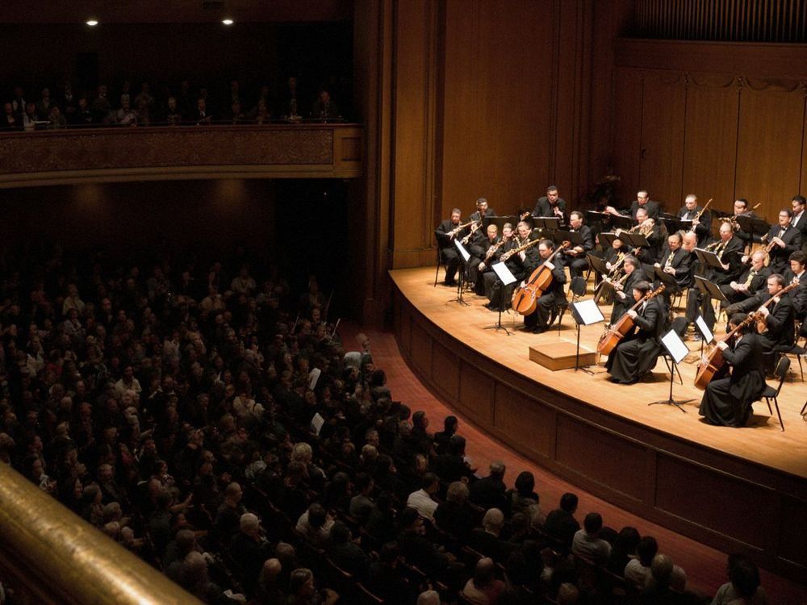

Chabalekei, the Children's Choir of the Palace of Art

Sixty children aged 7 to 15, in three groups, rehearse in the Palace of Art. The choir began as a Saturday class in 1998; the children chose the name Chabalekei, the swallow, in 2012.
Since 2012 the foundation has paid the teachers and the choir's bus, so singing in Chabalekei costs nothing.